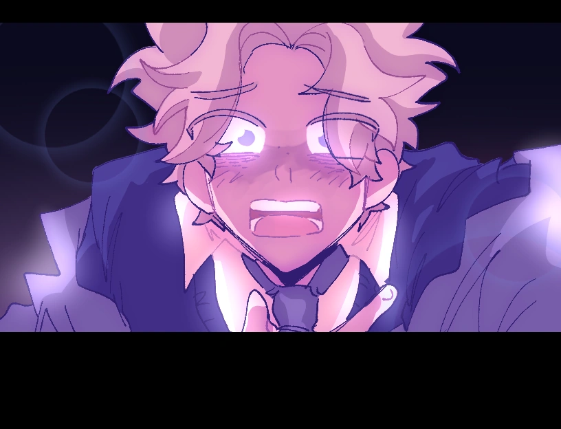
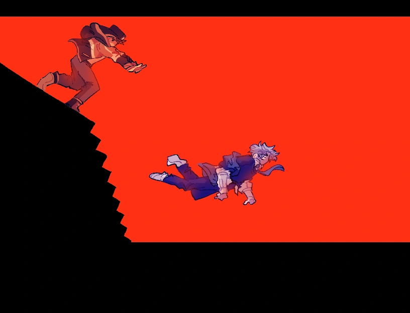

Endings
Good Ending
GOOD ENDTrigger
To obtain the good ending, you must choose not to push Winnie off the stairs.
Synopsis
Winnie snaps Augustine out of his panic, telling him he had “a scary expression” and was sweating. Their long-avoided conversation about the first stair incident resurfaces—Winnie reveals that Augustine never pushed him; he tripped on his own. But Augustine could have saved him. That was the moment Winnie distanced himself to avoid worsening their strained relationship.
This time, with nowhere left to hide, they finally open up. Augustine's guilt and confusion spill out, and Winnie reassures him that he won't be angry—he just wants the truth. After working through their pain, they shift focus to escaping the nightmare they're trapped in.
Realizing they can kill the monster with gasoline and fire, they act together—Winnie douses the creature, Augustine lights the flame. Once the monster is burning, they embrace, unsure of what comes next… before the fire consumes them both.
In the blue-toned aftermath, Augustine wakes in the hospital calling out for Winnie. Luckily, Winnie survived with minor injuries. Augustine, however, broke his leg. Winnie's move is postponed, and he stays by Augustine's side throughout recovery. Eventually, they part ways—but for the first time in years, they do so as true best friends.
Bad Ending
BAD ENDTrigger
To obtain the bad ending, you must choose to push Winnie off the stairs.
Synopsis
As Augustine pushes Winnie, Winnie turns back in shock—looking at Augustine one last time. Augustine smiles faintly before revealing Winnie’s lifeless body. Awakening from the coma dream, Augustine refers to Winnie simply as “him,” no longer acknowledging his name. Seeing Winnie’s corpse, Augustine smiles again.
After leaving the hospital, people shower Augustine with attention—some out of pity, some out of confusion. Augustine doesn’t care. For the first time, he feels that he finally isn’t alone… because the person who “stole everything” from him is gone.